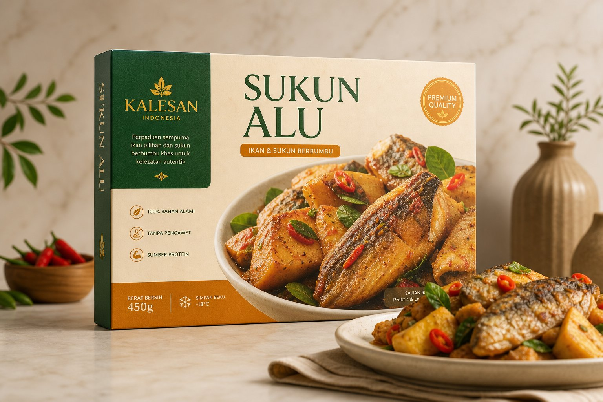
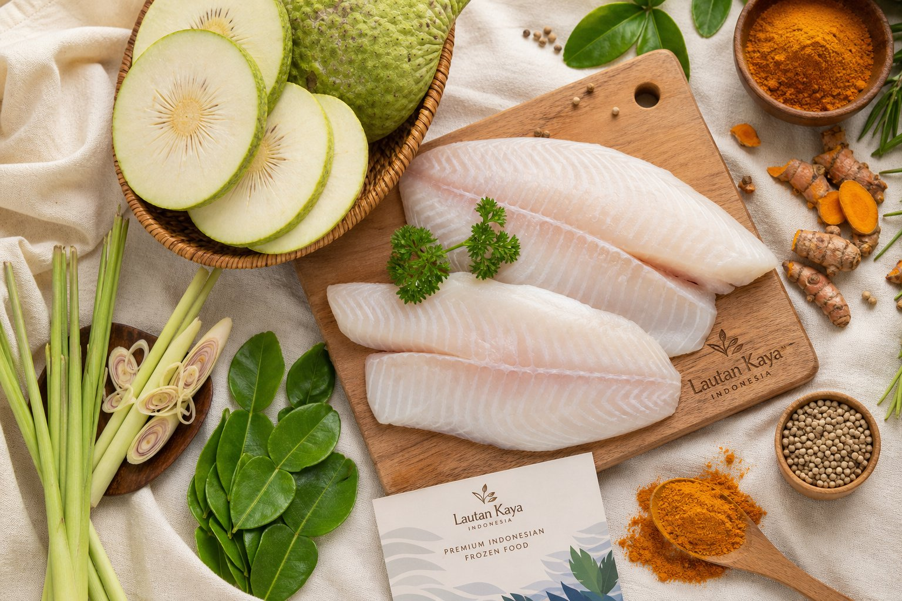
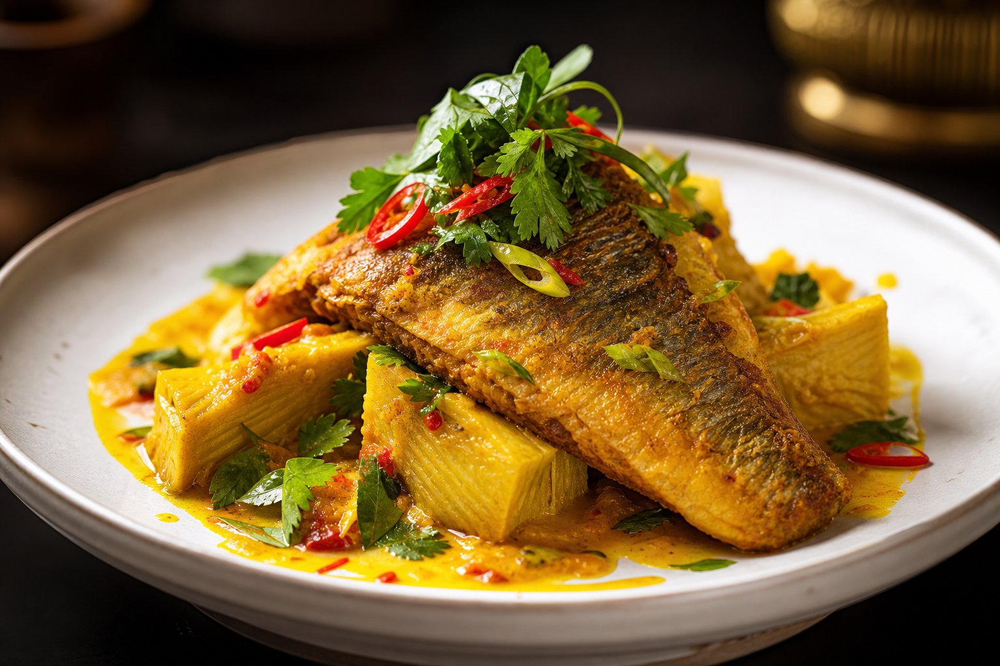
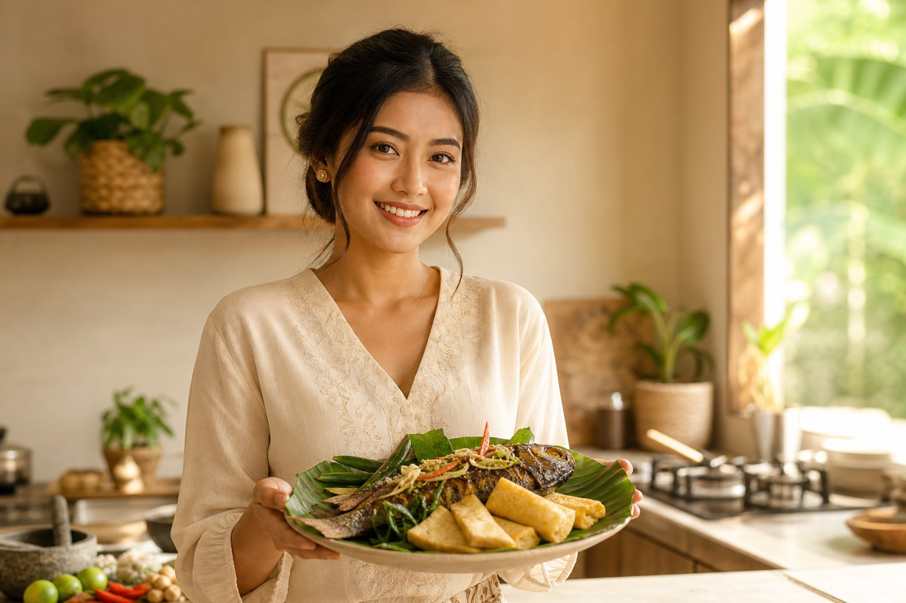

Premium Frozen Food Indonesia
Rasa Autentik Indonesia,
Dalam Setiap Gigitan.
Kalesan Sukun Alu menggabungkan ikan segar pilihan dan sukun berkualitas dalam satu kemasan praktis. Tanpa kompromi rasa — hanya keaslian yang siap disajikan dalam hitungan menit.
✅ 100% Tanpa Pengawet
🐟 Ikan Segar Pilihan
🌿 Bahan Alami

Tentang Produk
Tradisi yang Dikemas,
Rasa yang Terjaga.
Kalesan Sukun Alu lahir dari kecintaan terhadap makanan rumahan Indonesia. Setiap potongan ikan dan sukun dipilih secara teliti, diolah dengan bumbu rempah tradisional, lalu dibekukan dalam kondisi optimal agar rasa tetap utuh — dari dapur kami langsung ke meja Anda.
- Tanpa bahan pengawet buatan
- Ikan laut segar dari nelayan lokal
- Rempah asli Indonesia
- Proses pembekuan cepat (blast freeze)

Bahan Utama
Apa yang Membuat
Kalesan Istimewa?
Ikan Segar Pilihan
Ikan laut berkualitas tinggi yang dipilih langsung dari nelayan lokal. Daging lembut, rasa bersih, dan bebas dari bau amis yang mengganggu.
Sukun Premium
Buah sukun (breadfruit) matang yang memiliki tekstur lembut seperti kentang dan rasa manis alami — sempurna menyerap bumbu rempah.
Rempah Asli
Serai, daun jeruk, kunyit, dan bawang merah — semua rempah asli Indonesia yang memberikan aroma dan rasa otentik tak tergantikan.

Tampilan Premium
Keindahan dalam
Setiap Potongannya.
Ketika disajikan, Kalesan Sukun Alu menghadirkan warna keemasan, tekstur yang menggoda, dan aroma rempah yang langsung membangkitkan selera. Setiap porsi dirancang agar terlihat seperti hidangan restoran — tapi siap dalam waktu kurang dari 10 menit.
Cara PenyajianKeunggulan
Mengapa Memilih
Kalesan Sukun Alu?
Praktis Tanpa Kompromi
Dari freezer langsung ke piring dalam 10 menit. Tidak perlu persiapan rumit, tidak perlu belanja bahan satu per satu.
Rasa Otentik
Bumbu rempah tradisional yang diracik oleh ahli kuliner Indonesia memastikan setiap gigitan terasa seperti masakan rumah.
Kualitas Terjaga
Proses blast freeze mempertahankan nutrisi, tekstur, dan rasa seperti saat pertama kali diolah — tanpa pengawet buatan.
Cocok untuk Keluarga
Porsi yang pas untuk satu hingga dua orang. Ideal untuk makan malam cepat, bekal anak, atau makan siang praktis di rumah.

Gaya Hidup
Untuk Mereka yang
Menghargai Waktu dan Rasa.
Keluarga muda, profesional sibuk, dan pecinta kuliner Indonesia — semuanya memiliki satu kesamaan: mereka ingin makanan yang enak tanpa harus mengorbankan waktu atau kualitas. Kalesan Sukun Alu hadir sebagai solusi yang tidak memaksa Anda memilih antara praktis dan otentik.
"Saya tidak punya waktu memasak setiap hari, tapi saya tetap ingin anak saya makan makanan bergizi dan lezat. Kalesan menjadi penyelamat kami."
— Dinara, 31, Ibu Rumah Tangga Modern
Apa Kata Mereka
Pendapat Pelanggan
Tentang Kalesan.
★★★★★"Saya biasanya skeptis dengan makanan beku, tapi Kalesan benar-benar berbeda. Rasanya seperti masakan ibu saya — hangat, kaya rempah, dan ikan yang benar-benar segar."
★★★★★"Saya bekerja dari pagi sampai malam. Kalesan membuat saya tetap bisa makan makanan Indonesia yang sehat tanpa harus pesan makanan cepat saji."
★★★★★"Anak-anak saya sangat menyukai sukun. Saya senang bisa memberikan makanan bergizi yang mereka sukai tanpa harus memasak dari nol setiap hari."
Cara Penyajian
Dari Freezer ke Piring
Dalam 10 Menit.
Buka Kemasan
Buka kemasan premium Kalesan dan letakkan potongan ikan serta sukun dalam wadah tahan panas.
Pilih Metode
Panaskan dalam microwave selama 4 menit, goreng dengan sedikit minyak selama 6 menit, atau kukus selama 8 menit.
Tambahkan Sentuhan
Tambahkan irisan cabai, daun kemangi, atau saus sambal sesuai selera. Sajikan hangat dengan nasi putih atau roti.
Nikmati Bersama
Hidangkan di meja makan dan nikmati rasa autentik Indonesia bersama keluarga atau teman terdekat.
Pesan Sekarang
Pilih Paket
Sesuai Kebutuhan.
Paket Keluarga
Ideal untuk 4–6 porsi
Rp 89.000
/ 4 kemasan
- 4 kemasan Kalesan Sukun Alu
- Bonus saus sambal tradisional
- Gratis ongkir Jakarta & sekitarnya
- Garansi kesegaran 30 hari
Paket Reguler
Ideal untuk 2–3 porsi
Rp 48.000
/ 2 kemasan
- 2 kemasan Kalesan Sukun Alu
- Panduan penyajian digital
- Ongkir flat rate
- Garansi kesegaran 30 hari
Semua harga sudah termasuk pajak. Produk dikirim dalam kemasan es batu untuk menjaga kualitas selama pengiriman.
Informasi
Pertanyaan yang
Sering Diajukan.
Apakah Kalesan Sukun Alu mengandung pengawet buatan?
Tidak sama sekali. Kami hanya menggunakan proses blast freeze dan bahan alami. Tidak ada MSG tambahan, pengawet kimia, atau pewarna buatan.
Bagaimana cara menyimpan produk ini?
Simpan dalam freezer pada suhu -18°C atau lebih rendah. Produk dapat bertahan hingga 6 bulan dalam kondisi beku yang baik.
Apakah bisa dipesan untuk pengiriman luar kota?
Tentu. Kami melayani pengiriman ke seluruh Indonesia melalui kurir berpendingin. Biaya pengiriman akan disesuaikan dengan lokasi tujuan.
Apa yang membedakan sukun dengan kentang biasa?
Sukun memiliki tekstur yang lebih lembut, rasa manis alami, dan kandungan serat yang lebih tinggi dibandingkan kentang biasa. Ini membuatnya lebih sehat dan lebih nikmat saat menyerap bumbu rempah.
Rasakan Autentisitas Indonesia
Dalam Hitungan Menit.
Jangan biarkan kesibukan menghalangi Anda menikmati makanan berkualitas. Kalesan Sukun Alu siap menemani setiap momen makan bersama keluarga.
Pesan Sekarang — Mulai dari Rp 48.000